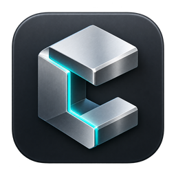

Build with code.
Make it real.
Parametric parts, woodworking, sheet metal and room plans.
Version …
Choose a project folder with an index.ts, or a TypeScript entry file (.ts) directly. Only open code you trust.

Parametric parts, woodworking, sheet metal and room plans.
Version …
Choose a project folder with an index.ts, or a TypeScript entry file (.ts) directly. Only open code you trust.